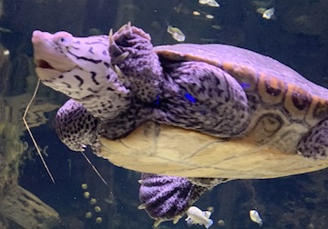

Movement
"The principle of movement goes back to the idea that good design controls the eye's flow through the composition. The flow of lines can move the eye across the page or screen. Lines then, can create movement, and different kinds of linear movement tend to communicate different kinds of symbolic messages." (White Space is Not Your Enemy, Pg. 58)
In simpler terms, movement allows us to follow the image, and gives us context as to what is happening in the image.
iPhone Picture
In this picture is a swimming turtle. This picture is meant to display the fact that the turle is moving. You can see the opening of his jaw, and that he is paddling forward. Although this image is very simple: the turtle is swimmng, not all images are. Movement adds an extra effect to any layout, and helps give a physical symbol to the audience of what is happening in the image. If you were going to make a flyer for a marathon, you would use a picture of someone running.
DSLR Picture
This picture displays movement. You can easily see these students are walking wit the movement of their legs and swaying of their arms.